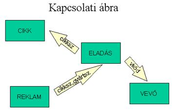

8.4. Szervíz
Ismertetés
Márkaboltok egyetlen szervizében fogadjuk a reklamációkat. A márkaboltok különböző cikkeket tartanak, melyekből konkrét gyártási számmal rendelkező darabokat adnak el. Az eladásokról kell tehát tudnia a szervíznek. A vevő akár többször is reklamálhat, ui. javítást, cserét vagy visszafizetést kérhet.
Ezt olvasva, mondatonként vázoljuk az adatbázis tábláit:
„Mindegyik márkabolt különböző cikkeket tart."
CIKK {cikksz,
megnev, garancia, egysár}
„melyekből konkrét gyártási számmal rendelkező darabokat ad
el."
ELADÁS {cikksz,
gyártsz, kelt}
„a vevő"
VEVŐ {vkód,
név, cím}
ELADÁS {cikksz,
gyártsz, kelt, vkód} módosult
"többször is reklamálhat (igények)"
REKLAM {cikksz,
gyártsz, dátum, igény,
telj}
Az igény legyen 1 karakter, a teljesítés dátuma pedig később kerül bejegyzésre.
Vegyük észre, hogy minden boltnak és a szervíznek ugyanaz a cikktörzse, melyben az eszmei cikk garanciaideje (hány hónap) és egységára is található. A konkrét cikk az, amit eladnak, amit a szervíz fogadhat, csak egyetlen vevőnek tudnak eladni, ugyanis. 2 egyforma vasalónak csak a cikkszáma azonos, a gyártási számuk már nem. A boltok természetesen saját készleteiket is nyilvántartják, és eladáskor bizonylatot készítenek, de a szervíz csak az eladás tényét akarja látni. Vevő-törzsre szükség van a kiszállításhoz, az értesítési cím miatt. A vevő konkrét cikkét a garanciaidőn belül megreklamálhatja, pl. többször javíttatja, cserélteti, majd visszafizetteti. Lehet, hogy a szervízben javítással indul a dolog, és ott tesznek javaslatot cserére, vagy a sorozatos hibák láttán a visszafizetésre. Valószínűleg erről bizonylatot írnak és a vevő a konkrét márkaboltban intézi ezeket.

Egyelőre itt a fenti adatbázis felállítása elegendő. Aki a szervíz reklamációs ügyvitelét ellátja, annak gondoskodni kell a munkák elvégzéséről, bizonylataik előállításáról és a bolti eladások fogadásáról. Mindezek nyilvántartására itt nem térünk ki.
Három, eléggé gyakori dolgot szeretnénk a meglévő adatbázishoz kapcsolni azzal a céllal, hogy az új táblák értelmezése rögződjön olvasóinkban.
1. Csere esetén tárolni kell, melyik cikkért milyen dátummal melyiket adták. Konkrét cikket csak ugyanolyan cikkre lehet cserélni.
CSERE {cikksz, gyártsz, kelt, új_gyártsz}
Vegyük észre, hogy ez a tábla 1:1 kapcsolatban van az eladással, hiszen az eladott cikkek részhalmazáról van szó. (Minden eladott cikket bizonyára nem fognak becserélni, hogy a szervíz 1 táblában tartsa őket, egy eladott cikket pedig csak egyszer lehet becserélni.) Ilyen esetben az eladás a szülő tábla, a csere pedig a gyerek; tehát a csere kulcsa egyúttal külső kulcs és az eladásra mutat. Másrészt egy cserére szánt új cikk ugyancsak egyszer vehet részt a cserében, tehát a csere további egyedi kulcsa a cikksz és új_gyártsz páros is. pl. „A mai napon a régebben vásárolt vasalómat (gyártási száma 122333) új vasalóra cserélték (gyártási száma 233444)."
Az esemény hatása: 1 új sor a CSERE-táblában.
2. Az egységes cikktörzsben az egységár néha változik, leginkább megnő. Tudni kell a garanciaidőkre eső aktuális árakról is.
Ahelyett, hogy minden eladáskor rögzítenénk a tétel mellé a pillanatnyi árat (ez egy zöldséges esetében elfogadható, mert sűrűn változtat eladási árat), itt az árváltozások tárolását oldjuk meg.
ÁRVÁLT {cikksz, mióta, új_ár}
Úgy érezzük, ez tiszta megoldás a pillanatnyi árak felkutatására. Ekkor a cikktörzsben feleslegesnek tűnik már az aktuális ár tárolása. (Bár SQL-beli lekérdezése adott cikk adott napi árának nem is olyan egyszerű.) De nézzük meg, mi a teendő egy induló adatbázisban. Nos, az összes cikket az induló árával fel kell venni az árváltozásba! (És még nem beszéltünk a sűrű eladások alkalmával tett mindenkori lekérdezések végrehajtásáról...)
Vagyis az árváltozás kicsit módosul:
ÁRVÁLT {cikksz, mikor, régi_ár}
Ekkor a CIKK-törzsben szigorúan ott van az aktuális új ár. A régi árak visszakeresése most is ugyanannyi munkával oldható meg, az induló cikktörzs cikkei pedig nem kerülnek induláskor ide. Eladáskor azonnal kiolvasható az aktuális ár a törzsből.
pl. „A mai naptól a vasaló (cikkszáma 12345/6666) ára felmegy; 6500 Ft helyett 7200 Ft lesz." Az esemény hatása: 1 új sor az ÁRVÁLT táblában (12345/6666, 2003.08.18., 6500) és a cikkszám sorának módosítása a CIKKben (egysár = 7200)
3. Az egyes márkaboltoktól a bizonylatolt eladásokat kapjuk meg.
SZÁMLA {szlaszám, dátum, vkód, végösszeg}
SZ_TÉTEL {cikksz, gyártsz, szlaszám}
A számlatétel nem szokványos, hiszen a számlaszámon belül felesleges sorszámozott tételként felsorolni a konkrét cikkeket, miután mindegyikből csak 1 darab létezik, tehát az kizárólag egy számlára kerülhet fel. pl. „Ma vettem 2 egyforma hajszárítót és 1 vasalót egy számlára."
Az esemény hatása: 1 új sor a SZÁMLA-táblában és 3 új sor a SZ_TÉTELben (a 3 sorban egyforma a szlaszám és a 3 sor közül 2-ben ugyanaz a cikkszám).
Feltételezzük, hogy a vevő és a 2-féle cikk már létezik a saját törzsében.